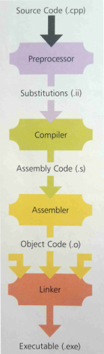

# Linux - ELF - Compiling
## Compiling
Compiling follows this process:
1. The source code -
hello.c - is preprocessed (reads the pre-processor macros and substitutes code/values accordingly) - creates a subsitutions file -
hello.ii2. The substitutions file is compiled into assembly code -
hello.s3. The assembly code is assembled into object code -
hello.o4. The object files are linked into the final executable or library -
helloELF binary files can be compiled into 1 of the following types:
• relocatable object files
• executable files
• shared objects